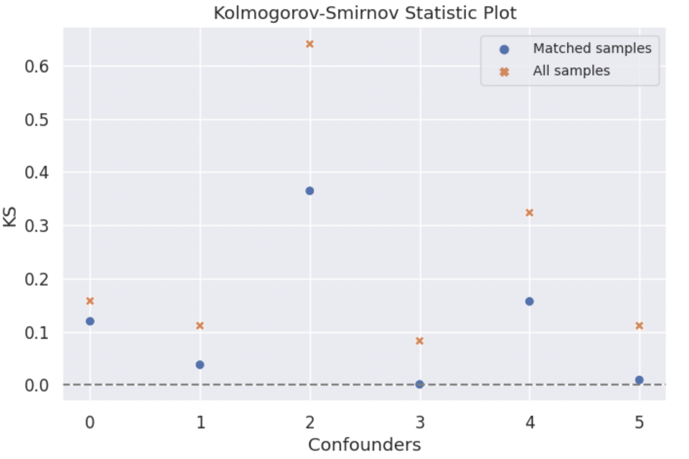
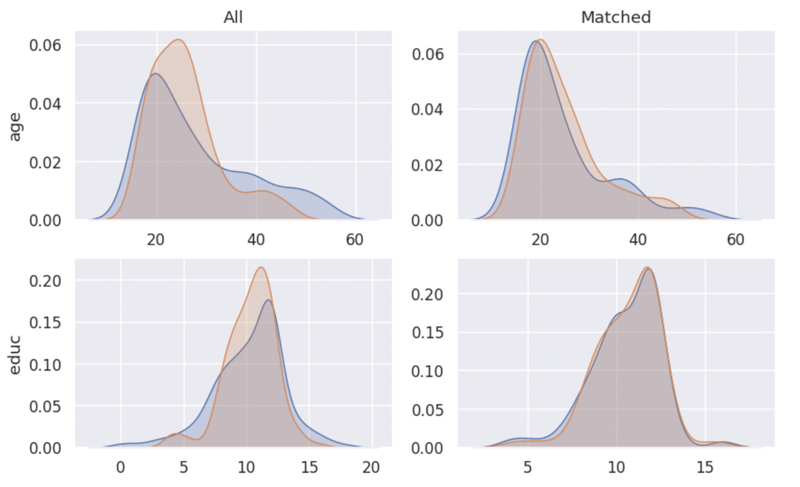
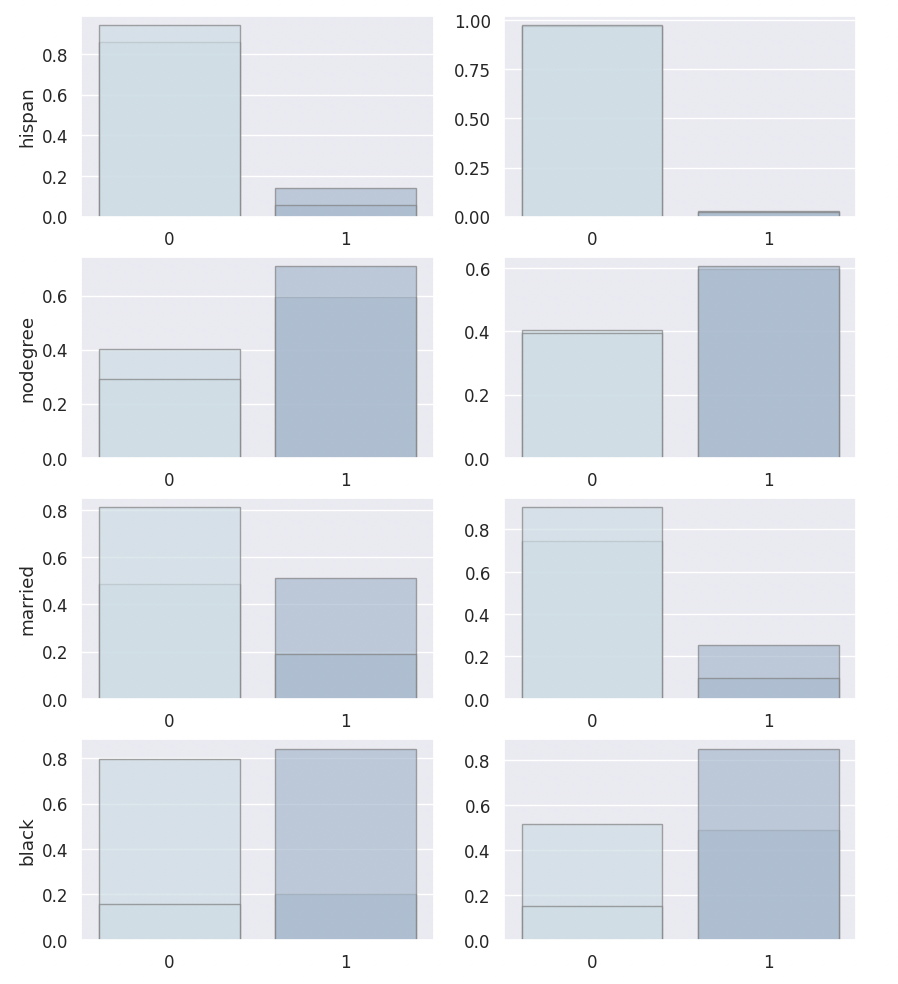
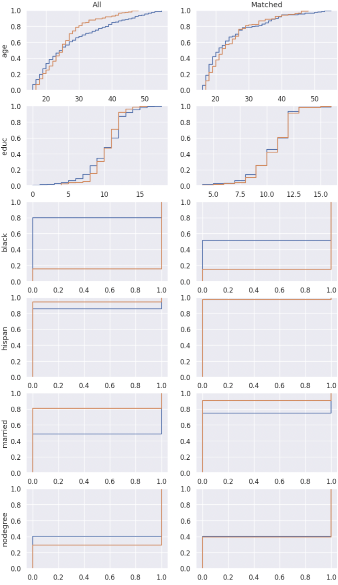

🔖 CEM Notebook Example - Lalonde Dataset¶
Here we provide a notebook example illustrating the usage of the CEM package with the Lalonde dataset.
from CEM.balance import balance
from CEM.cem import cem
from CEM.data_generation import data_generation
from CEM.inference import inference
from CEM.sensitivity_analysis import *
1. Data preperation¶
The first step to prepare our dataset, and we use the Lalonde dataset here (Lalonde, R. 1986).
The study looked at the effectiveness of a job training program (the treatment) on the real earnings of an individual, a couple years after completion of the program.
Lalonde dataset is a data frame with 614 observations, examining the impact of a job training program (referred to as the treatment) on the actual earnings of an individual. There are 185 treated and 429 control subjects, and 10 variables. The treatment assignment indicator is the first variable of the data frame: treatment (1 = treated; 0 = control). The next 7 columns are the covariates:
age: continuous, measured in years;
education: continuous, measured in years;
black: categorical, indicating race (1 if black, 0 otherwise);
hispanic: categorical, indicating race (1 if Hispanic, 0 otherwise);
married: categorical, indicating marital status (1 if married, 0 otherwise);
nodegree: categorical, indicating high school diploma (1 if no degree, 0 otherwise);
re74: continuous, real earnings in 1974;
re75: continuous, real earnings in 1975.
The last variable of the data frame is re78, the real the earnings in 1978.
Reference
Dehejia, R., and Wahba, S. (1999), “Causal Effects in Nonexperimental Studies: Reevaluating the Evaluation of Training Programs,” Journal of the American Statistical Association, 94, 1053-1062.
Lalonde, R. (1986), “Evaluating the Econometric Evaluations of Training Programs,” American Economic Review, 76, 604-620.
https://search.r-project.org/CRAN/refmans/designmatch/html/lalonde.html
import numpy as np
import pandas as pd
df = pd.read_csv('/content/lalonde.csv').iloc[:, 1:]
df.head()
2. Coarsened Exact Matching (CEM)¶
Firstly you should create your own cem , giving it your dataframe, column names of confounders, continuous confounders, result variable \(re78\) and treatment variable \(treat\).
confounder_cols = ['age', 'educ', 'black', 'hispan', 'married', 'nodegree']
cont_confounder_cols = ['age', 'educ']
my_cem = cem(df = df, # dataframe to be matched
confounder_cols = confounder_cols, # list of confounders' column names
cont_confounder_cols = cont_confounder_cols, # list of continuous confounders' column names
col_y = 're78', # column name of result variable
col_t = 'treat' # column name of treatment variable
)
The summary of the simulated dataframe is as follows.
Before matching the estimated ATT (Average Treatment Effect on Treated) is 1.0085, which is far from the true ATT 3.0.
my_cem.summary()
Descriptive Statistics of the dataframe:
treat age educ black hispan married nodegree \
count 614.0000 614.0000 614.0000 614.0000 614.0000 614.0000 614.0000
mean 0.3013 27.3632 10.2687 0.3958 0.1173 0.4153 0.6303
std 0.4592 9.8812 2.6283 0.4894 0.3220 0.4932 0.4831
min 0.0000 16.0000 0.0000 0.0000 0.0000 0.0000 0.0000
25% 0.0000 20.0000 9.0000 0.0000 0.0000 0.0000 0.0000
50% 0.0000 25.0000 11.0000 0.0000 0.0000 0.0000 1.0000
75% 1.0000 32.0000 12.0000 1.0000 0.0000 1.0000 1.0000
max 1.0000 55.0000 18.0000 1.0000 1.0000 1.0000 1.0000
re74 re75 re78
count 614.0000 614.0000 614.0000
mean 4,557.5466 2,184.9382 6,792.8345
std 6,477.9645 3,295.6790 7,470.7308
min 0.0000 0.0000 0.0000
25% 0.0000 0.0000 238.2834
50% 1,042.3300 601.5484 4,759.0185
75% 7,888.4982 3,248.9875 10,893.5925
max 35,040.0700 25,142.2400 60,307.9300
Control group vs. Experimental group
n_samples mean_Y
0 429 6984.169742
1 185 6349.143530
T-test of Experimental group Y and Control group Y
att estimate (p-value): -635.0262(0.3342)
The difference between Experimental group Y and Control group Y is not significant.
Then we can try matching your dataset using match function with default parameters.
After the default coarsened exact matching, 63.24% treated samples are matched.
my_cem.match()
Matching result
all matched propotion
0 429 154 0.3590
1 185 117 0.6324
3. Balance Checking¶
Firstly you should create your own balance instance, giving it your matched dataframe, original dataframe, column names of confounders, continuous confounders, result variable \(re78\) and treatment variable \(treat\).
Let’s check the L1 imbalance score after CEM with default coarsen parameters.
my_balance = balance(df_match = my_cem.matched_df, # matched dataframe
df_all = my_cem.df, # original dataframe
confounder_cols = my_cem.confounder_cols, # list of column names of confounders
cont_confounder_cols = my_cem.cont_confounder_cols, # list of column names of continuous confounders
col_y = 're78', # column name of result variable
col_t = 'treat') # column name of treatment variable
l1_before, l1_after = my_balance.balance_assessing(method = 'L1')
L1 imbalance score before matching: 0.7775
L1 imbalance score after matching: 0.4846
Moreover, we can customize our coarsen schema to optimize our matching result.
Method 1: You can input a schema dictionary indicating how to coarsen each continuous confounders \(X\) if you have a thorough understanding on your dataset.
The following cutting method can be chosen.
cut: Bin values into discrete intervals with the same length.qcut: Discretize variable into equal-sized buckets based on rank or based on sample quantiles.struges: Bin values into discrete intervals with the same length k according to the Sturges’ rule.
Method 2:
You can also use the tunning_schema function to help you tune the coarsen schema automatically.
The matched result with a suitable coarsen schema will have smaller L1 imbalance score and more matched samples.
Here we show the example of tunning_schema. Comparing with default coarsen schema, the L1 imbalance score after matching with tuned schema decreases from 0.4846 to 0.4372.
l1, schema = my_cem.tunning_schema(step = 2)
my_cem.match(schema = schema)
my_balance = balance(my_cem.matched_df, my_cem.df, my_cem.confounder_cols, my_cem.cont_confounder_cols, col_y = 're78', col_t = 'treat')
my_balance.balance_assessing(method = 'all')
Matching result
all matched propotion
0 429 146 0.3403
1 185 114 0.6162
L1 imbalance score before matching: 0.7619
L1 imbalance score after matching: 0.4372
-------------------------
SMD Result
Balance measures
Treated Mean Control Mean SMD Variance Ratio \
age 24.8333 25.1079 -0.0323 0.7514
educ 10.6579 10.6566 0.0007 0.8947
black 0.8509 0.8509 -0.0000 .
hispan 0.0263 0.0263 0.0000 .
married 0.0965 0.0965 0.0000 .
nodegree 0.6053 0.6053 -0.0000 .
SMD.Threshold(<0.1) Var.Threshold(<2)
age Balanced Balanced
educ Balanced Balanced
black Balanced .
hispan Balanced .
married Balanced .
nodegree Balanced .
-------------------------
Balance tally for SMD
count
SMD.Threshold(<0.1)
Balanced 6
------------------------------
Variable with the max SMD:
SMD SMD.Threshold(<0.1)
educ 0.0007 Balanced
------------------------------------
Balance tally for Variance ratio
count
Var.Threshold(<2)
Balanced 2
-----------------------------------------
Variable with the max variance ratio:
Variance Ratio Var.Threshold(<2)
educ 0.8947 Balanced
-----------------------------------------
{kind=link}
KS Result
{kind=link}
Density Plot
 {kind=link}
{kind=link}
ECDF Plot
{kind=link}
4. Treatment Effect Inference¶
After conducting the coarsened exact matching and imbalance checking, we can estimate the average treatment effect ATT and heterogeneous treatment effect HTE with statistical inference methods.
Ordinal least square linear regression method
linear_attand weighted least square linear regression methodweighted_linear_attare provided for the ATT estimation.
Linear double machine learning method (Chernozhukov et al. 2017)
linear_dml_hteis provided for the HTE estimation.
Reference
Chernozhukov, V., Chetverikov, D., Demirer, M., Duflo, E., Hansen, C., Newey, W., & Robins, J. (2017). Double/debiased machine learning for treatment and causal parameters.
Firstly you should create your own inference instance, giving it your matched dataframe, column names of result variable \(re78\), treatment variable \(treat\), control variables, and confounders.
With the weighted linear regression method and linear double machine learning method, the estimated ATT and CATE are 661.9226, 1174.266 respectively, which are much better than -635.0262.
my_inf = inference(df = my_cem.matched_df, # matched dataframe
col_y = 're78', # column name of result variable
col_t = 'treat', # column name of treatment variable
col_x = ['re74', 're75'], # list of column names of control variables, please be noted that confounders should not be included in this list
confounder_cols = my_cem.confounder_cols) # list of column names of confounders
att = my_inf.weighted_linear_att()
print(f'att: {round(att, 4)}')
cate, hte, r2 = my_inf.linear_dml_hte()
print(f'cate: {round(cate, 4)}, r2:{round(r2, 4)}')
WLS Regression Results
==============================================================================
Dep. Variable: y R-squared: 0.023
Model: WLS Adj. R-squared: 0.012
Method: Least Squares F-statistic: 2.049
Date: Wed, 30 Aug 2023 Prob (F-statistic): 0.107
Time: 13:04:37 Log-Likelihood: -2830.9
No. Observations: 271 AIC: 5670.
Df Residuals: 267 BIC: 5684.
Df Model: 3
Covariance Type: nonrobust
==============================================================================
coef std err t P>|t| [0.025 0.975]
------------------------------------------------------------------------------
const 5169.0557 601.703 8.591 0.000 3984.370 6353.742
treat 661.9226 817.002 0.810 0.419 -946.663 2270.508
re74 -0.0189 0.116 -0.163 0.871 -0.247 0.209
re75 0.3917 0.194 2.018 0.045 0.010 0.774
==============================================================================
Omnibus: 204.061 Durbin-Watson: 1.802
Prob(Omnibus): 0.000 Jarque-Bera (JB): 3566.896
Skew: 2.825 Prob(JB): 0.00
Kurtosis: 19.851 Cond. No. 1.21e+04
==============================================================================
Notes:
[1] Standard Errors assume that the covariance matrix of the errors is correctly specified.
[2] The condition number is large, 1.21e+04. This might indicate that there are
strong multicollinearity or other numerical problems.
att: 661.9226
cate: 1174.266, r2:0.0041
5. Sensitivity Analysis¶
When we conduct causal inference to the observational data, the most important assumption is that there is no unobserved confounding. Therefore, after finishing the treatment effect estimation, investigators are advised to examine how strong the effect of unobserved confounders should be to erase the treatment effect estimated.
5.1 Omitted variable bias based sensitivity analysis¶
In the following example, we choose \(educ\) as our benchmark variable. The analysis result gives us the following informations:
Robustness Value (RV):
It provides a convenient reference point to assess the overall robustness of a coefficient to unobserved confounders. If the confounder’s association to the treatment \(R_{Y\sim Z|T, X}^2\) and to the outcome \(R_{Z\sim T|X}^2\) are both assumed to be less than the \(RV\), then such confounders cannot “explain away” the observed effect.
Contour Line:
The points on the same contour line has the same adjusted estimated ATT. The contour line helps us to know the value of the adjusted estimated \(ATT\) when \(R_{Y\sim Z|T, X}^2 = a\) and \(R_{Z\sim T|X}^2 = b\).
Bound the strength of the hidden confounder using observed covariate:
We can choose an observed confounder \(X_j\) as a benchmark, and check the adjusted estimated \(ATT\) when
import statsmodels.api as sm
X = sm.add_constant(my_cem.matched_df[[my_cem.col_t] + ['age', 'educ', 'black', 'hispan', 'married', 'nodegree', 're74', 're75']])
y = np.asarray(my_cem.matched_df[my_cem.col_y])
model = sm.WLS(y.astype(float), X.astype(float), weights=1)
my_ovb = ovb(col_t='treat', model=model, bench_variable='educ', k_t = [5], k_y=[5], measure = 'att')
my_ovb.plot_result()
{kind=link}
5.2 Wilcoxon’s signed rank test based sensitivity analysis¶
Wilcoxon’s signed rank test based sensitivity analysis is suitable for 1-1 matched dataset, therefore 1-1 matching needs to be conducted firstly. You can implement it simply by setting k2k_ratio = 1, and here we choose the propensity score to measure the similarity by setting dist = 'psm'.
The wilcoxon class function can give you a result table, which shows you the p-value intervals under each \(\Gamma\).
In the following example, when \(\Gamma = 3.00\), the upper bound of the p-value’s interval is greater than 0.05, which means that in this situation, we don’t have 95% confidence to reject the null hypothesis that the treatment is randomly assigned. In other words, when \(\Gamma = 3.00\) the estimated ATT will be explained away by unovserved confounders.
my_cem_k2k = cem(df, confounder_cols, cont_confounder_cols, col_y = 're78', # column name of result variable
col_t = 'treat')
my_cem_k2k.match(k2k_ratio = 1, dist = 'psm')
my_sen = wilcoxon(df=my_cem_k2k.matched_df, pair = my_cem_k2k.pair, col_y='re78')
wilcoxon_df = my_sen.result([1, 2, 3, 4, 4.25, 5])
Matching result
all matched propotion
0 429 117 0.2727
1 185 117 0.6324
lower_p upper_p
gamma
1.00 0.0 0.0000
2.00 0.0 0.0060
3.00 0.0 0.1773
4.00 0.0 0.5680
4.25 0.0 0.6562
5.00 0.0 0.8470
The estimated ATT result is not reliable if there exists an unobservable confounder which makes the magnitude of probability
that a single subject will be interfered with is 3.0 times higher than that of the other subject.